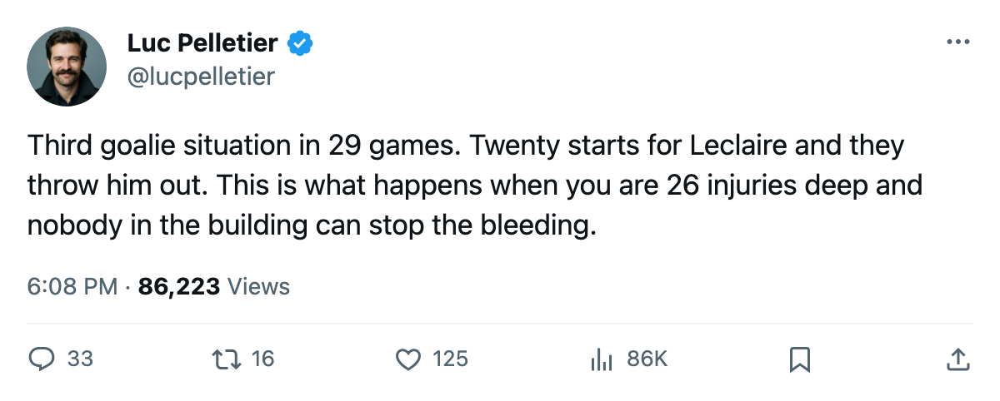

Goalie Watch: Columbus Sends Leclaire Out and Puts Denis Back In
The Blue Jackets have 26 injury spells, the most in the league, and now a third goaltending arrangement in 29 games
 Luc PelletierMontreal correspondent · Home Ice Network
Luc PelletierMontreal correspondent · Home Ice Network
The  Columbus Blue Jackets Blue Jackets have made
Columbus Blue Jackets Blue Jackets have made  Marc Denis90 their starting goaltender again and removed
Marc Denis90 their starting goaltender again and removed  Pascal Leclaire91 from the roster entirely.
Pascal Leclaire91 from the roster entirely.
Leclaire started 20 of Columbus's 29 games. He is not dressed for any line.  Fred Brathwaite79, who had 3 appearances earlier in the season, holds the G2 designation. Denis has 8 games.
Fred Brathwaite79, who had 3 appearances earlier in the season, holds the G2 designation. Denis has 8 games.
Columbus Blue Jackets sits 5th in the West at 34 points, three ahead of the 8th-place line occupied by  Detroit Red Wings. They lost 2-1 at
Detroit Red Wings. They lost 2-1 at  New Jersey Devils on December 12 and host
New Jersey Devils on December 12 and host  Calgary Flames on December 19 in the first meeting between these clubs this season.
Calgary Flames on December 19 in the first meeting between these clubs this season.
The injury log keeps growing
Columbus has 26 injury spells this season, more than any other club, with 139 man-days lost.  Dimitri Kalinin82 was signed on December 10, went on the injured list between December 11 and December 15 with an arm injury, and is out until January 8.
Dimitri Kalinin82 was signed on December 10, went on the injured list between December 11 and December 15 with an arm injury, and is out until January 8.  Todd Marchant82 has been out with a knee since November and will not return until January 30.
Todd Marchant82 has been out with a knee since November and will not return until January 30.
The Blue Jackets went 24 for and 23 against over their last 10 games, a stretch that included two overtime results. Their record over that span nets zero points gained from where they stood before it began.
This is the third goaltending arrangement in 29 games. Denis started the opening run, Leclaire took over in late November, and now the order has reversed. Leclaire's 20 starts came at a rate the staff did not find sufficient, and the club has no healthy backup depth to point to behind that.
Columbus Blue Jackets's division record in the Central reads 1 regulation win, 2 overtime wins, 2 regulation losses across 5 games. Their non-division schedule has carried them to 34 points.
Denis gets the net in Columbus's building Friday.
